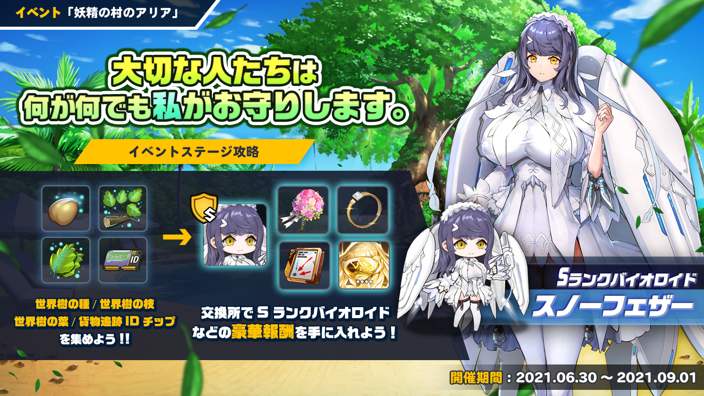
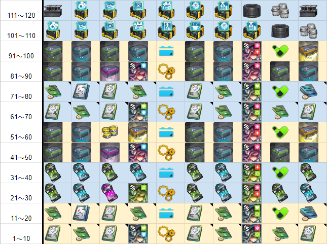
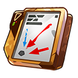
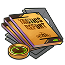
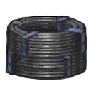
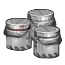
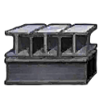

前言
1，参考源：日本WIKI
2，如果觉得好用就给个赞吧，赞又不要钱0.0，不定时更新。
2，如果觉得好用就给个赞吧，赞又不要钱0.0，不定时更新。
活动描述

2021年06月30日（星期三）维护后 至 2021年09月01日（星期三）维护前
作戦展開中にグアムの港を占領したオルカ号。潜水艦のオーバーホール作業が実施される間、隊員たちは残りの地域を掌握したり、休息を取るなど各自それぞれの時間を過ごしていた。
そんな彼女たちの前に現われた身元不明のバイオロイド。彼女は自分のことをバイオロイド救護活動に携わる共同体の一員だと紹介し、彼女の居場所である「妖精の村」へと案内してくれる。
彼女のリーダーと対面しようとした瞬間に発生した爆発、そして「妖精の村」に抵抗する白い翼を持つバイオロイド。怪しい雰囲気を漂わすロボットと司令官に向けられた陰謀の片りん。
時の流れから取り残された熱帯の島で繰り広げられる物語、6月30日にその真相が明らかに！
- 妖精村舞台可以像里约波罗斯的遗产一样通过探索活动关卡得到货物追踪ID芯片。
- またデイリークエスト・ウィークリークエスト報酬や交換でも得る事が出来ます。
- ID芯片用于轮盘赌（双六），每转一次就可以得到1～6个残骸和根据残骸数前进的棋子（A～F）的道具。
- 每集20个残骸就登上舞台，每次到达舞台都能从部件→营养→电力的顺序拿到资源1000，在一定的舞台上还能得到特别报酬。
- ルーレットは稀にチップの消費なしで回せる事があります。
- 各个阶段报酬:
- 特定阶段报酬
10  滅亡前の戦闘記録x1 25  滅亡前の戦術教本x1 50 約束の花束x10 75 クリチップβx1 100 特殊代替コアx1 125  合成樹脂・塗料・鉄材x1800 150 誓約指輪x1
| NO | 任务名称 | 细节 | 部分 | 营养 | 电力 | 物品 |
|---|---|---|---|---|---|---|
| 001 | 区域巡逻 | 通关活动关卡10次 | 375 | 375 | 375 | 通用模块 x 30 豪华模块 x 3 维修纳米机 x 1 货物追踪 ID 芯片 x 3 |
| 002 | 生长抑制 | 消灭50只铁虫 | 150 | 0 | 0 | AI 核心 x 1 修复纳米机器 x 1 货物追踪 ID 芯片 x 3 |
| 003 | 确保新的力量 | 制造3 个生物体 | 200 | 400 | 250 | 基因种子 x 2 快速完成电路 x 1 货物追踪 ID 芯片 x 3 |
| 004 | 新设备供应 | 制造5个装备 | 50 | 0 | 0 | 作战装备核心 x 3 货物追踪 ID 芯片 x 3 |
| 005 | 寻找消失的成员 | 获得 10 个生物体* 1 | 0 | 100 | 0 | 基因种子 x 1 修复纳米机器 x 1 货物追踪 ID 芯片 x 3 |
| 006 | 保障供应 | 完成资源搜索10次 | 100 | 100 | 200 | 基因种子 x 1 快速完成电路 x 1 货物追踪 ID 芯片 x 3 |
| 007 | 战斗员检查 | 强化战士3倍 | 0 | 0 | 50 | 快速完成电路 x 1 重型攻击机模块 MP x 1 重型保护模块 MP x 1 货物跟踪 ID 芯片 x 3 |
| 008 | 设备检查 | 强化装备3次 | 200 | 200 | 200 | 装备改良芯片组 MP x 3 作战装备核心 x 3 货物追踪 ID 芯片 x 3 |
| 009 | 不断的训练 | 清除每日训练一次 | 0 | 0 | 0 | 战斗日记 x 1 货物追踪 ID 芯片 x 3 |
| 从以下列表中随机出现一个 | ||||||
| 010 | 潜在风险消除 | 消灭3个boss铁虫 | 150 | 150 | 150 | 豪华模块 x 3 原型零件 x 3 维修纳米机器 x 1 货物追踪 ID 芯片 x 3 |
| 011 | 晚餐是鸡肉吗？ | 摧毁Nighttic 系列的30 只铁虫 | 100 | 0 | 0 | 量产型零件 x 30 货物追踪 ID 芯片 x 3 |
| 012 | 有害机械 | 摧毁 25 只穿着轻便的铁甲虫 | 0 | 150 | 0 | 武装零件 x 5 重型武装零件 x 1 货物追踪 ID 芯片 x 3 |
| 013 | 废铁收集 | 摧毁 10 只重武装的铁甲虫 | 150 | 0 | 0 | 合金装甲板 x 5 超合金装甲板 x 1 货物追踪 ID 芯片 x 3 |
| 014 | 烦人的苍蝇 | 摧毁 10 个移动铁虫 | 0 | 0 | 150 | 助推器部件 x 5 高输出助推器部件 x 1 货物跟踪 ID 芯片 x 3 |
| 015 | 仓库安排 | 拆卸设备3次 | 100 | 0 | 100 | 作战装备核心 x 2 货物追踪 ID 芯片 x 3 |
如果您喜欢我的帖子，別忘了返回K站给我个赞吧~非常感谢！